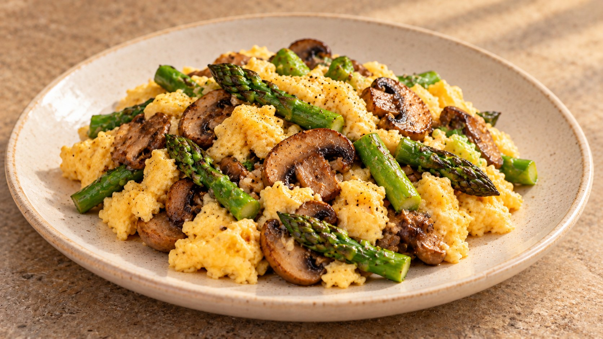

Revuelto de champiñones y trigueros

Descargar receta en PDF · A4Más de Huevos
Ingredientes
- 4 huevos
- 150 g de champiñones, enteros o laminados
- 200 g de espárragos trigueros
- 1 diente de ajo
- 1 cucharada de aceite de oliva virgen extra
- Sal y pimienta negra
- Perejil picado (opcional)
- Un poco de agua (solo si los tallos son gruesos)
Preparación
Si los champiñones están enteros y tienen poca suciedad, límpialos con un paño húmedo o un cepillo suave. Si tienen tierra adherida, pásalos brevemente bajo el grifo de agua fría, sin dejarlos en remojo, y sécalos enseguida. Recorta el extremo del pie si está seco o tiene tierra; no hace falta pelarlos ni quitarles todo el pie. Córtalos en láminas. Si los compras laminados, úsalos directamente si el envase indica que están lavados o listos para cocinar. Si tienen restos de tierra, enjuágalos brevemente y sécalos con cuidado, sin remojarlos. Lava los espárragos, retira la parte dura y córtalos en trozos de unos 3 cm, reservando las puntas. Pela y pica el ajo.
Calienta la mitad del aceite en una sartén y saltea los tallos a fuego medio. Añade las puntas en los últimos 2 minutos. Si los tallos son gruesos, incorpora un poco de agua y tapa brevemente para ablandarlos. Retira a un plato.
Añade el aceite restante y cocina los champiñones a fuego medio-alto, hasta que se evapore el agua y empiecen a dorarse. Evita amontonarlos; haz dos tandas si la sartén es pequeña. Añade el ajo picado en el último minuto.
Devuelve los espárragos a la sartén, salpimienta y mezcla. Baja el fuego al mínimo y deja que la sartén pierda algo de temperatura antes de incorporar los huevos.
Bate ligeramente los huevos con una pizca de sal. Viértelos y remueve despacio con una espátula, recorriendo el fondo. Retira en cuanto estén cuajados y todavía jugosos; el calor residual terminará de asentarlos. Sirve enseguida, con perejil picado si te apetece.
Claves
Champiñones secos y sin amontonar para que se doren. Huevos a fuego muy suave para mantener la jugosidad. Sin leche ni nata.